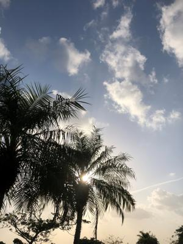

うるがいの話 ある日
最新: ホームから外出【うるがいの話 ある日】とは 一日だけのプログです
『うるがいの話』の最新一日だけのプログで、通信料が少なく経済的だ。カニの画像をクリックすると全ての日付が載る『うるがいの話』サイトを表示します
|
|
【うるがいの話】 うるがい(ｳﾙｶﾞｲ urugai)とは、『もずくがに』の名前でとても大きくなります。 |
|---|---|
|
|
【カミマヤーの話】 猫のことを方言でマヤーといいます。カミマヤー（kamimayaa）とは、神の猫のことです。 |
|
【たながぁの音楽】 たながぁ（ﾀﾅｶﾞｰ tanagaa）とは手長えびのことで、何種類かあり大きいのは車 エビぐらいになります。 |

|
【ぶながぁの話】 ぶながぁ(ﾌﾞﾅｶﾞｰ bunagaa)とは、赤い髪の毛、赤い身体、そして身長は１ｍ２０ｃｍ ぐらい、川の蟹を食べているの目撃された。場所は沖縄県国頭郡大宜味村のと ある村僕の隣近所に住んでいる爺さんから、聞いた話です。 |
|
|
【ギーマの話】 ギーマ(giima)とは、山原の里山に咲くスズランに似た、 花を付けます。実は食べられます、 気が付くと口の周りが紫になっています。 |
2023年04月04日 (火）ホームから外出
16:33

ヨメのお義母さんが、通院している内科へ行くためホームから外出させた。ヨ
メと二人は、戦々恐々、ホームに帰らない！と言ったら・・・・。案の定、ホ
ームから、車に乗せるなり文句をたらたら、さすがに運転に集中できないので
黙ってと叱る。一時間ほどで病院での診察を終え、ヨメが薬局に行っている間
お義母さんに、いきなり誰も知らないホームに入ると辛いよね、私が小学６年
の時、学校から男女代表で石川の青年の家に合宿に行ったとき、そこに着くな
り悲しくなって泣き続け、行事には全く参加せず夜、スタッフの車で家に送っ
てもらったことがある。スタッフが親に、彼はホームシックになっていますと
話していたので、翌日姉等になんで帰ってきたのと問われ、ホームシックだよ
と答えたのでバカにされた。ホームシックの意味も分からないので答えたのだ
が・・・。などなど、延々と話し続ける。お義母さんも時々、会話する。する
としばらくすると顔が穏やかになり、ホームでは辛いかもしてないが、もーマ
ンションで一人で住むことは出来ないから、我慢してねと説得する。ほどなく
してヨメが、車に戻りホームに向かって車を走らせる。すると今から、何処へ
いくの？、ホームなの？、と、そうだよコロナのためマンションへは戻れない
ホームに行くよとヨメは答える。そしてお義母さんは、ホームに戻った。あと
で病院での様子を聴くと、周りのことは気にせずずーとくだをまいていた。ホ
ームから飛び降りて・・と何度も言っていたと。
１６時２４分 ビットコインの総資産 ￥１０、８１６（↑４）